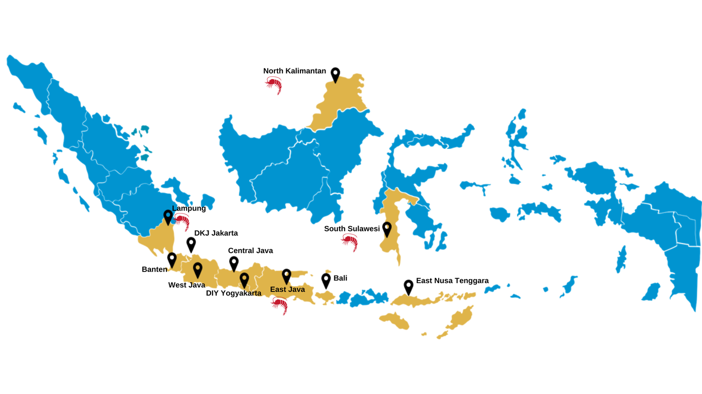

Rantai nilai
Udang
Sekitar 80% (240.400 Ha) dari total 300.500 Ha tambak udang di Indonesia dilakukan dengan metode tradisional/ekstensif, terutama oleh petambak kecil di daerah pesisir. Budidaya udang polikultur tradisional ramah lingkungan (yaitu, menggunakan pakan alami, tidak atau sedikit menggunakan pakan buatan dan bahan kimia), memiliki kepadatan tebar yang rendah, dan petani di beberapa lokasi juga menjaga mangrove di tambak mereka. Oleh karena itu, budidaya udang tradisional berpotensi untuk disertifikasi sebagai udang organik atau budidaya udang berlabel lingkungan.
GQSP Indonesia 2 bertujuan untuk mempromosikan budidaya udang polikultur yang berkelanjutan dengan meningkatkan praktik budidaya melalui penerapan SOP Budidaya Udang Tradisional Plus (TSFP), dengan tujuan meningkatkan produktivitas budidaya. Selain itu, program penanaman mangrove akan dipromosikan untuk mendukung keberlanjutan praktik budidaya udang. Jasa ekosistem yang disediakan oleh mangrove juga akan dieksplorasi, termasuk potensi ekowisata mangrove sebagai sumber pendapatan tambahan bagi petambak udang.
Budidaya Udang Tradisional Plus (TSFP)
Sistem TSFP mengembangkan metode tradisional yang ada dengan menerapkan pendekatan yang disempurnakan untuk persiapan tambak, mendorong pertumbuhan pakan alami, meminimalkan penggunaan pakan tambahan, dan menggabungkan aerasi tambahan jika diperlukan. Program ini bekerja sama dengan Forum Udang Indonesia (FUI) dan eFishery untuk merintis dan memperluas TSFP di Sulawesi Selatan dan Jawa Timur. Kolaborasi ini menargetkan petambak kecil, bersama dengan Dinas Kelautan dan Perikanan (DKP) dan kelompok petani. Lokasi percontohan berada di Sulawesi Selatan, yaitu di kabupaten Maros, Pangkep, dan Barru, serta di Jawa Timur, yaitu Gresik, Sidoarjo, Banyuwangi, dan Jember.
Di Tarakan, Kalimantan Utara, sejak Oktober 2023, proyek ini, bekerja sama dengan Blueyou dari Swiss (Blueyou), mempromosikan budidaya udang-milkfish polikultur tradisional yang berkelanjutan yang terintegrasi dengan konservasi mangrove. Inisiatif ini bertujuan untuk meningkatkan produksi udang sekaligus berkontribusi signifikan terhadap rehabilitasi ekosistem.
Penekanan yang kuat pada promosi TSFP Indonesia dalam kerangka Merek Udang Indonesia akan ditekankan. Kolaborasi dengan pembeli nasional dan internasional untuk meningkatkan TSFP akan diperkuat, termasuk mempromosikannya melalui Global Sustainable Seafood Initiative (GSSI) untuk memastikan inklusi TSFP dalam Seafood MAP. Untuk Udang Selva, proyek ini bertujuan untuk mencapai sertifikasi Aquaculture Stewardship Council (ASC) dan/atau sertifikasi Organik Uni Eropa.

Publikasi dan kegiatan terkait